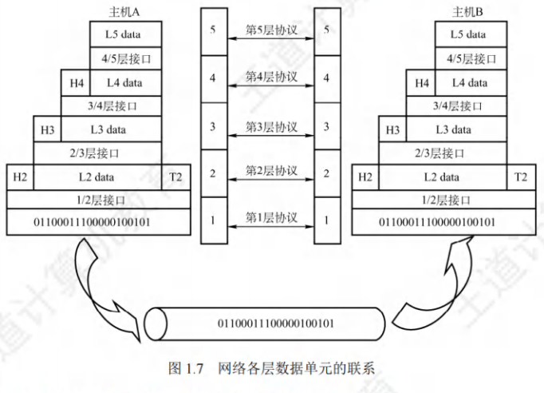
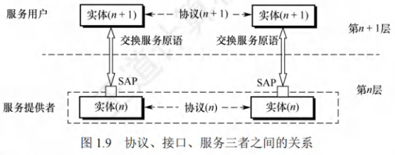
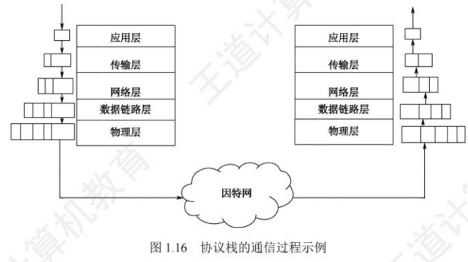

网络体系结构
[toc]
网络的体系结构的概念
网络的体系结构(Architecture)：计算机网络的各层及其协议的集合。
计算机网络的体系结构是这个计算机网络及其所应完成的功能的精确定义。
分层
实体
- 指任何可发送或接收信息的硬件或软件进程。
- 第层中的活动元素一般叫做第层实体。
- 不同机器上处于同一层的部分被称作对等层，同一层的实体就是对等实体。第层实体所实现的服务供第层使用，此时第层是服务提供者，第层为服务用户。
协议数据单元(PDU)
- 在计算机网络体系结构中，对等层之间传输的数据单位即该层的协议数据单元(PDU)，第层的PDU记为。各层的PDU都包含数据和控制信息两部分。
服务数据单元(SDU)与协议控制信息(PCI)
- 服务数据单元(SDU)：是为实现用户所需功能而传输的数据。第层的SDU记为。
- 协议控制信息(PCI)：用于控制协议操作的信息。第层的PCI记为。
各层PDU通俗名称
- 物理层的PDU称作比特流。
- 数据链路层的PDU叫做帧。
- 网络层的PDU是分组。
- 传输层的PDU为报文段。
三者关系
- 当数据在各层间传输时，把从第层接收到的PDU当作第层的SDU，添加第层的PCI后，封装形成第层的PDU，再将其作为SDU交给第层发送。
- 接收方则进行相反处理。它们的关系为：

分层的基本原则
- 功能独立性：每层实现相对独立功能，以此降低大系统的复杂程度。这样各层专注于自身功能实现，便于系统的设计、维护与优化。
- 接口清晰性：各层间接口应自然明晰，易于理解，且相互交流尽量少。清晰的接口能减少层间耦合，提高系统的可扩展性和兼容性。
- 技术无关性：各层功能的精确界定独立于具体实现方式，以便采用最合适的技术来达成。这使得不同技术可灵活应用于相应层次，推动技术的发展与创新。
- 单向依赖性与标准化：保持下层对上层的独立性，上层单向使用下层提供的服务。整个分层结构应助力标准化工作，便于不同厂商设备和软件的互联互通。
协议
- 定义：为确保网络中数据交换有条不紊地进行，需遵循事先约定的规则，这些规则、标准或约定即为网络协议(Network Protocol)。它是控制对等实体间通信规则的集合，具有水平特性，即对等层实体间遵循协议通信，不对等实体间不存在协议。
- 组成部分
- 语法：数据与控制信息的格式。例如，TCP报文段格式由TCP协议的语法定义。
- 语义：需要发出何种控制信息、执行何种动作以及做出何种应答。例如，TCP连接建立过程中的三次握手操作由TCP协议的语义定义。
- 同步(或时序)：执行各种操作的条件、时序关系等，即对事件实现顺序的详细说明。例如，TCP连接三次握手操作的时序关系由TCP协议的同步定义。
接口
定义：同一结点内相邻两层实体交换信息的逻辑接口称作服务访问点(Service Access Point，SAP)。每层仅能为紧邻的上下层定义接口，不可跨层定义。服务通过SAP提供给上层使用，第层的SAP是第层访问第层服务的位置。
服务
定义：服务指下层为紧邻的上层提供的功能调用，具有垂直特性。对等实体在协议控制下，使本层能够为上层提供服务，而实现本层协议则需借助下层提供的服务。

网络提供的服务分类
| 服务类型 | 特点 | 示例 |
|---|---|---|
| 面向连接服务 | 需建立连接，分为连接建立、数据传输、连接释放三阶段 | TCP（HTTP/1.1、FTP） |
| 无连接服务 | 无需建立连接，尽最大努力交付 | IP、UDP（DNS、视频流） |
| 可靠服务 | 具备纠错、检错和应答机制，确保数据准确传输 | TCP、FTP |
| 不可靠服务 | 尽力而为，需应用层保障可靠性 | UDP、IP |
| 有应答服务 | 接收方自动发送确认或否定应答 | 文件传输（FTP） |
| 无应答服务 | 无自动应答，需高层实现 | WWW（HTTP浏览） |
面向连接服务和无连接服务
- 面向连接服务
- 特点：通信前双方必须先建立连接，并分配相应资源(如缓冲区)，确保通信顺利进行。传输结束后，释放连接及占用的资源。该服务分为连接建立、数据传输和连接释放三个阶段。
- 示例：TCP协议。
- 无连接服务
- 特点：通信前无需先建立连接，当需要发送数据时，直接将每个带有目的地址的包(报文分组)传送到线路上，由系统选定路线进行传输。这种服务常被描述为“尽最大努力交付”，属于不可靠服务。
- 示例：IP协议和UDP协议。
可靠服务和不可靠服务
- 可靠服务：网络具备纠错、检错以及应答机制，能够保证数据准确、可靠地传送到目的地。
- 不可靠服务：网络仅尽力使数据正确、可靠地传送到目的地，属于尽力而为的服务。在不可靠服务的网络中，数据的正确性和可靠性需由应用程序或用户自行保障。
有应答服务和无应答服务
- 有应答服务：接收方在收到数据后会向发送方给出相应应答，此应答由传输系统内部自动实现，而非用户操作。应答既可以是肯定应答，也可以是否定应答，通常在接收到的数据存在错误时发送否定应答。例如文件传输服务，以确保文件准确传输。
- 无应答服务：接收方收到数据后不会自动给出应答。若需要应答，则由高层实现。例如WWW服务，用户浏览网页时，浏览器并不需要对每个网页数据的接收都向服务器发送应答。
数据传输过程
在计算机网络的数据传输中，各协议层协同工作，完成数据从用户端到接收端的传输与还原。
发送端处理流程
- 应用层：将用户数据（如文本、图像）转化为适合通信的格式，作为传输层的服务数据单元（SDU）。
- 传输层：接收应用层的SDU，添加传输层的协议控制信息（PCI，如TCP头部），形成传输层的协议数据单元（PDU，报文段）。
- 网络层：将传输层的PDU作为网络层的SDU，添加网络层的PCI（如IP头部），形成网络层的PDU（分组）。
- 数据链路层：将网络层的PDU作为数据链路层的SDU，添加数据链路层的PCI（如以太网帧头），形成数据链路层的PDU（帧）。
- 物理层：将数据链路层的PDU转换为比特流，通过物理介质（如光纤、电缆）传输。
接收端处理流程
数据包到达接收方后，按相反顺序逐层解封装：
- 物理层：接收比特流，转换为数据链路层的PDU（帧）。
- 数据链路层：去除帧的PCI，将剩余部分作为网络层的SDU上传。
- 网络层：去除分组的PCI，将剩余部分作为传输层的SDU上传。
- 传输层：去除报文段的PCI，将剩余部分作为应用层的SDU上传。
- 应用层：将传输层的SDU转化为用户数据，呈现给用户。
